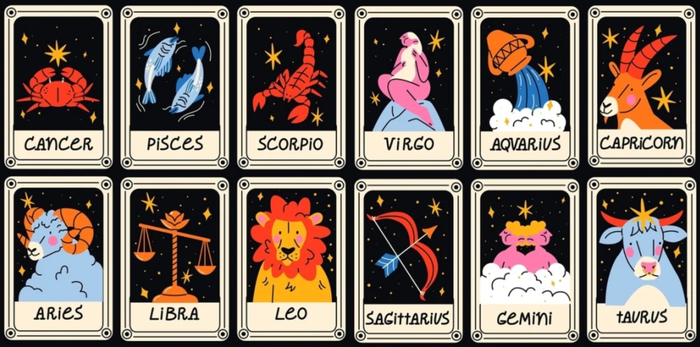

Projecte: Horòscop
Objectiu
El diari tecnològic Píxel Digital vol llançar una secció d'astrologia digital i us ha seleccionat per desenvolupar el prototip! Necessiten un programa que no només calculi l'edat exacta dels lectors sinó que també els reveli el seu destí segons les estrelles.

Funcionalitat:
Entrada de Dades
El programa ha de demanar a l'usuari:
- Any de naixement
- Mes de naixement
- Dia de naixement
- Any actual
- Mes actual
- Dia actual
Càlculs a Realitzar
A partir de les dades introduïdes, el programa ha de calcular:
- Edat completa (anys, mesos i dies)
- Temps fins al proper aniversari
Determinació del Horòscop
A partir de les dades introduïdes, el programa ha d'identificar el signe del zodiac de l'usuari i determinar una predicció personalitzada al signe
Sortida del Programa
El programa ha de mostrar tots els resultats de manera clara i ben organitzada
Personalitzau el programa per a facilitar la interacció amb la terminal als lectors, no fa falta que sigui com l'exemple de sota. Podeu personalitzar el programa per a que treballi amb més dades o tingui funcionalitats adicionals.
exemple de sortida:
==========================================
EL TEU HORÒSCOP
==========================================
--- DADES DE NAIXEMENT ---
Any de naixement: 2008
Mes de naixement (1-12): 5
Dia de naixement: 15
--- DATA ACTUAL ---
Any actual: 2024
Mes actual (1-12): 10
Dia actual: 20
==================================================
RESULTATS:
==================================================
Data de naixement: 15/5/2008
Data actual: 20/10/2024
Edat exacta: 16 anys, 5 mesos i 5 dies
Proper aniversari: d'aquí 7 mesos i 25 dies
Signe del zodíac: Taure
Missatge: Ets una persona persistent i pràctica!